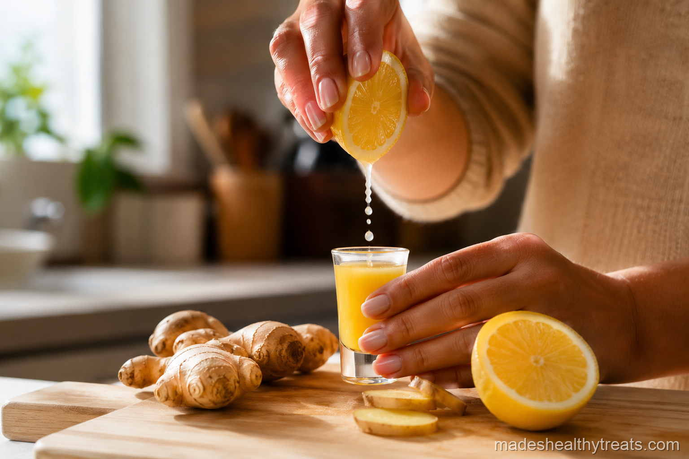

Why I Started Making Ginger Shots At Home
I started making ginger shots at home because juice bar prices were getting personal. I loved the fiery little bottles, but I did not love paying several dollars for one sip. One morning I tossed fresh ginger, lemon, honey, and water into my blender, strained it through a fine mesh strainer, and realized the secret had been sitting in my kitchen the whole time.
My Blender And Strainer Method
The method is simple. I blend chopped ginger with liquid and whatever flavor partners I want, then strain it through a nut milk bag or fine mesh strainer. The key is blending long enough to break the ginger down fully, then squeezing with patience so the shot is strong and smooth.
Classic Ginger Lemon
The classic one is fresh ginger, lemon juice, honey, and cold water. I make it when I want the cleanest version, the one that tastes bright, spicy, and familiar. It is the shot I give friends first because it feels bold without being too wild.
Ginger Turmeric
My ginger turmeric shot is the one I take when my body feels tired. I blend ginger, turmeric, lemon, black pepper, honey, and warm water. The pepper matters because it helps the turmeric do its thing, and the honey keeps the earthy flavor from taking over.

I have learned that the best wellness habits are the ones that still feel kind on a normal Tuesday morning.
Ginger ACV
The ginger apple cider vinegar version is for digestion days. I blend ginger, raw apple cider vinegar, lemon, honey, and water, then I dilute it enough that it tastes sharp but not punishing. I always rinse my mouth with water afterward because vinegar needs boundaries.
Ginger Beet And Ginger Pineapple
For ginger beet, I use beetroot, apple, lemon, ginger, and water when I want something deep and energizing. For ginger pineapple, I blend pineapple, ginger, lemon, turmeric, and water when I want the shot to feel tropical and cheerful. Both keep well in the fridge for about two days, though I think ginger shots at home taste best fresh.
How Strong I Make Them
The strength of my ginger shots depends on the week. If I feel great and just want a little morning spark, I use less ginger and more lemon. If everyone around me is coughing and I am entering my kitchen with determination, I make the ginger stronger and add cayenne. The beauty of ginger shots at home is that you control the heat. Juice bar shots can feel like a dare, but homemade shots can be adjusted until they feel powerful and still kind.
My Sunday Batch Rhythm
When I batch them on Sunday, I make enough for three mornings at a time. I pour the shots into small glass bottles, label the lids if I made more than one flavor, and keep them cold in the fridge. Before drinking, I shake the bottle because fresh ginger settles at the bottom like it has opinions. I do not keep them all week because the flavor gets dull. Three days is my sweet spot for freshness and convenience.
I also learned that the cleanup determines whether I will keep making them. Right after straining, I rinse the blender, the strainer, and the spoon before the ginger fibers dry into stubborn little threads. It takes one minute and saves me from resenting the habit later. A wellness routine has to include the boring practical parts too, because those are the details that decide whether I repeat it next week.
I keep coming back to ginger shots at home because they make me feel capable in a very small way. There is something satisfying about turning a knobby root, a lemon, and a little honey into the kind of bright morning ritual I used to buy in tiny bottles. It reminds me that homemade wellness does not have to be polished to be powerful.
You Might Also Like

Does a Smoothie a Day Actually Help You Lose Weight? I Tried It for 30 Days
I replaced my rushed breakfast with one green smoothie every morning for 30 days and tracked what really changed.
Read more →
What Happens to Your Body When You Drink Green Smoothies Every Day
I explain the simple body changes I noticed and the science that makes daily green smoothies make sense.
Read more →
The 7 Biggest Smoothie Mistakes That Are Ruining Your Results
I made these smoothie mistakes myself before I learned how to blend for energy, fullness, and real results.
Read more →Made's Note
Batch a few ginger shots on Sunday if mornings are hectic. Your future self may be sleepy, but she will be very grateful for that tiny bottle of fire. When I think about ginger shots at home, I think about real mornings, real kitchens, and the small choices that help us feel at home in our bodies.